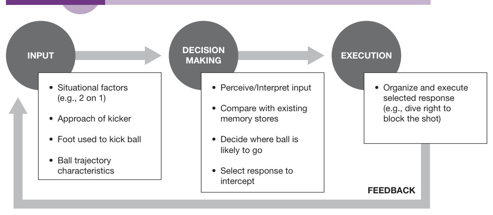

Chương 2 — Hiểu Về Sự Chuẩn Bị Vận Động
Sau 90 phút căng thẳng của thời thi đấu chính thức và hai hiệp phụ bất ngờ kéo dài 10 phút mỗi hiệp, tỉ số vẫn hòa. Chức vô địch liên đoàn sẽ được quyết định bằng những cú sút phạt đền. Jennifer đứng thứ tư trong thứ tự thực hiện. Cô lo lắng nhìn cầu thủ đầu tiên của đội bạn dễ dàng đưa bóng vào lưới. May mắn thay, đồng đội của cô lập tức san bằng tỉ số bằng cách đưa bóng vào góc dưới bên phải. Sau đó, cả hai thủ môn liên tiếp cản phá, khiến trận đấu vẫn hòa sau ba lượt. Khi cầu thủ thứ tư của đội bạn sút thẳng về phía góc trái, Jennifer nín thở. Không tốt! Thủ môn đã chạm tay vào bóng! Giờ đến lượt cô. Cô tiến lại gần bóng, chờ đến khoảnh khắc cuối cùng có thể để lộ ý định của mình, rồi dứt điểm bằng chân trái. Thủ môn đã phản ứng, nhưng đã quá muộn!
Cú sút phạt đền tạo ra một thời điểm ra quyết định quan trọng cho cả thủ môn lẫn người thực hiện cú sút. Ví dụ, khi đối mặt với nhiệm vụ cản phá một cú phạt đền, thủ môn phải đánh giá tình huống để xác định cả nơi bóng sẽ đi đến và động tác nào sẽ chặn được bóng. Nhiệm vụ còn phức tạp hơn do giới hạn thời gian, vì cô ấy chỉ có chưa đầy một giây để đưa ra những quyết định này, rồi tổ chức và thực hiện đáp án vận động trước khi bóng vượt qua đường cầu môn. Trên thực tế, thủ môn cần quyết định hướng cô ấy sẽ lao tới trước cả khi chân của người sút chạm vào bóng, và có thể lập luận rằng quyết định này chỉ là một sự đoán. Vậy điều gì tạo nên sự khác biệt giữa một pha cứu thua mang tính quyết định và một nỗ lực thất bại? Chỉ đơn giản là đoán đúng? Hay có những chiến lược mà thủ môn có thể dùng để tăng khả năng cản phá? Hiểu về sự chuẩn bị vận động sẽ giúp trả lời những câu hỏi này.
CÁC CÁCH TIẾP CẬN LÝ THUYẾT ĐỐI VỚI SỰ CHUẨN BỊ VẬN ĐỘNG
Các giác quan của chúng ta liên tục bị tấn công bởi thông tin từ cả nguồn bên trong và bên ngoài (thông tin cảm giác hay đầu vào). Trước khi bất kỳ thông tin nào trong số đó có thể được dùng để giúp người học lựa chọn một đáp án phù hợp cho một tình huống nhất định, thông tin đó trước hết phải được xử lý một cách chủ động. Việc nhận diện và giải thích các kích thích cảm giác — hay nói cách khác, quá trình gán ý nghĩa cho thông tin cảm giác — được gọi là tri giác. Hai cách tiếp cận giải thích bản chất của tri giác hiện đang phổ biến.
Mô Hình Xử Lý Thông Tin
Lời giải thích đầu tiên, sản phẩm của tâm lý học nhận thức, cho rằng các quá trình tri giác dẫn đến việc tạo ra một dạng biểu diễn biểu tượng nào đó của thông tin về môi trường và nhiệm vụ. Thông tin này đi qua một chuỗi các quá trình tinh thần, bao gồm việc so sánh với các kho trí nhớ hiện có, và dẫn đến một quyết định về hành động nào (nếu có) là cần thiết để đáp trả tình huống. Bởi vì có “nhu cầu thông tin cảm giác phải được xử lý hoặc
chi tiết hóa để cung cấp cho người tri giác một mô tả có ý nghĩa về thế giới”, tri giác trong mô hình này được coi là gián tiếp (Burton, 1987, tr. 258). Quan điểm về tri giác này thường được liên kết với một mô hình chuẩn bị vận động gọi là xử lý thông tin, được thể hiện trong Hình 2.1. Trong mô hình này, một người thực hiện, chẳng hạn như thủ môn, sẽ nhận được một lượng lớn thông tin hay đầu vào. Trong trường hợp của thủ môn, đầu vào này bao gồm chân của đối thủ khi anh ta sút bóng; các đặc điểm của bản thân quả bóng, gồm vận tốc, quỹ đạo, độ xoáy và hướng đi; tỉ số; cảm giác mồ hôi trên da của thủ môn; hình ảnh và âm thanh của đám đông; tiếng máy bay bay trên đầu; mùi và màu của cỏ; ký ức về những thành công hay thất bại trước đó trong những tình huống tương tự; và một đánh giá về vùng lưới cần được bảo vệ. Khi đánh giá các yêu cầu của nhiệm vụ, thủ môn sẽ thấy một số thông tin trong đó có liên quan hoặc hữu ích, ví dụ như vận tốc, quỹ đạo và hướng đi của bóng. Những thông tin khác, chẳng hạn như chiếc máy bay bay trên đầu, thì không liên quan và nên được bỏ qua. Bằng cách tập trung vào các kích thích phù hợp, thủ môn sẽ nhận được thông tin then chốt để tạo ra một đáp án chặn được cú sút. Sau khi thông tin đã được thu thập, nó được chuyển hóa thành các tín hiệu thần kinh cảm giác hướng tâm (afferent) và dẫn đến não bộ; tại đây, trong quá trình ra quyết định, nó được tích hợp hoặc so sánh với những trải nghiệm tương tự trong quá khứ được lưu trữ trong trí nhớ dài hạn. Dựa trên sự so sánh này, một quyết định được đưa ra và một đáp án được chọn (lao sang phải, bắt bóng, nhảy), được tổ chức và thực hiện thông qua các mệnh lệnh vận động ly tâm (efferent). Mô hình này còn gợi ý rằng khi động tác được khởi động, thông tin về tiến trình của nó được phản hồi lại cho người thực hiện. Thông tin này, được gọi là phản hồi nội tại, có thể được dùng để điều chỉnh động tác nếu có sự khác biệt giữa điều đã định và điều đang thực sự xảy ra (nếu còn thời gian). Nó cũng cho phép người thực hiện đánh giá kết quả của đáp án.

Hình 2.1: Mô hình xử lý thông tin
ĐẦU VÀO. THỰC HIỆN. PHẢN HỒI. RA QUYẾT ĐỊNH.
- Các yếu tố tình huống (ví dụ, 2 đấu 1).
- Cách tiếp cận của người sút.
- Chân dùng để sút bóng.
- Đặc điểm quỹ đạo của bóng.
- Tổ chức và thực hiện đáp án đã chọn (ví dụ, lao sang phải để chặn cú sút).
- Tri giác và giải thích đầu vào.
- So sánh với các kho trí nhớ hiện có.
- Quyết định nơi bóng có khả năng đi tới.
- Chọn đáp án để chặn bóng.
CEREBRAL CHALLENGE 2.1 — Thử thách Trí não
- Hãy lập danh sách các kích thích, cả có liên quan lẫn không liên quan, mà một thủ môn bóng đá có thể có được khi đối mặt với tình huống một chống một với một cầu thủ tấn công đã vượt qua mọi hậu vệ (phá hàng thủ).
- Ngoài việc quyết định nên thực hiện đáp án nào, người thực hiện còn phải xác định các chi tiết về đáp án đó, chẳng hạn như khi nào nên bắt đầu. Hãy lập danh sách các đáp án có thể có và các chi tiết của đáp án cho tình huống trên.
- Đối với một kỹ năng và tình huống do bạn tự chọn, hãy lặp lại các mục 1 và 2.
- Hãy suy đoán về sự khác biệt trong yêu cầu xử lý giữa các kỹ năng mở và kỹ năng đóng. Hãy nêu ví dụ để ủng hộ câu trả lời của bạn.
Cách Tiếp Cận Sinh Thái
Cách tiếp cận phổ biến thứ hai về tri giác cho rằng môi trường và nhiệm vụ được tri giác hay giải thích trực tiếp theo các sự mời gọi hành động (affordances). Sự mời gọi hành động là những khả năng hành động của môi trường và nhiệm vụ liên quan đến năng lực của chính người tri giác (Gibson, 1979). Nói cách khác, môi trường hay nhiệm vụ được tri giác theo những hành động mà người tri giác có thể thực hiện trên nó. Do những khác biệt cá nhân, nhiều người học có thể đối mặt với cùng một tình huống nhưng lại tri giác những sự mời gọi hành động hoàn toàn khác nhau. Ví dụ, khi đi bộ trong một cửa hàng, các sự mời gọi hành động mà một người lớn tri giác sẽ rất khác với của một đứa trẻ nhỏ vì sự khác biệt về chiều cao. Những hành động mà một chiếc điện thoại di động trong tay một sinh viên đại học mời gọi sẽ khác với những hành động mà một đứa trẻ mới biết đi có thể tri giác. Thường thì sinh viên đại học dùng điện thoại để trò chuyện hoặc nhắn tin với bạn bè, trong khi trẻ mới biết đi có thể dùng nó để đập, gõ hoặc nhai. Vì các sự mời gọi hành động được tri giác trực tiếp, quan điểm này, được gọi là cách tiếp cận sinh thái đối với tri giác, phản đối sự cần thiết phải viện đến các biểu diễn đã lưu trữ; nó xem mối quan hệ giữa tri giác và hành động là qua lại, trong đó hành động bị ảnh hưởng bởi tri giác và tri giác bị ảnh hưởng bởi hành động (xem Hình 2.2).
Trong mô hình này, thủ môn tìm kiếm những cơ hội hành động hay, nói cách khác, điều chỉnh sự nhạy bén của mình để nhận ra các sự mời gọi hành động xuất hiện trong tình huống phạt đền. Thay vì đưa ra quyết định bắt bóng hay lao ra chặn cú sút dựa trên việc xem xét các đặc điểm của bóng và những ký ức về kinh nghiệm tương tự, như cách tiếp cận gián tiếp đối với tri giác gợi ý, thủ môn tri giác trực tiếp quả bóng theo tính “có thể bắt được” của nó liên quan đến tỉ lệ cơ thể và năng lực của chính cô ấy (Burton, 1987). Nếu thủ môn tin rằng cô ấy đủ nhanh để nhảy trước bóng và bắt được bóng, hành động đó sẽ được chọn. Nếu cô ấy không nghĩ mình kịp, hoặc nghi ngờ khả năng bắt bóng của mình, cô ấy có thể chọn chặn bóng thay vì. Cần lưu ý rằng các sự mời gọi hành động, hay những cơ hội hành động, có thể dao động “như kết quả của những thay đổi dần dần

Hình 2.2: Cách tiếp cận sinh thái đối với tri giác gợi ý mối quan hệ trực tiếp giữa tri giác và hành động
TRI GIÁC DỰA TRÊN CÁC SỰ MỜI GỌI HÀNH ĐỘNG. Tính “có thể bắt được” của bóng liên quan đến tỉ lệ cơ thể và năng lực của thủ môn. CÁC SỰ MỜI GỌI HÀNH ĐỘNG. HÀNH ĐỘNG. Lao sang phải để chặn cú sút.
trong khả năng hành động của người chơi hoặc những thay đổi trong điều kiện thi đấu. Một quả bóng có thể bắt được khi bắt đầu trận đấu có thể trở nên không bắt được ở một thời điểm sau đó do mệt mỏi” (Fajen, Riley, & Turvey, 2009, tr. 80). Ngoài ra, những cơ hội hành động có thể xuất hiện rồi biến mất trong chốc lát. Một khoảng trống cho phép chuyền bóng trong một cuộc đua 800 m có thể mở ra trong một khoảnh khắc này rồi biến mất ở khoảnh khắc tiếp theo, cản trở sự tiến của một vận động viên (Fajen et al., 2009). Việc thiết kế luyện tập để giúp người học điều chỉnh sự nhạy bén đối với các sự mời gọi hành động nhằm tạo điều kiện cho tiếp thu kỹ năng và thực hiện sẽ được thảo luận sau trong cuốn sách này. Hiện tại, hãy xem các tài nguyên được ghi ở lề để hiểu rõ hơn về các sự mời gọi hành động và cách chúng ảnh hưởng đến các quyết định vận động, rồi thử Hoạt động Khám phá 2.1.
- Giải thích chung: (a) www.youtube.com/watch?v=81MgPOIq-Uw
- (b) www.youtube.com/watch?v=cUH700QUz64
- Ứng dụng trong huấn luyện: www.youtube.com/watch?v=qejaHPi9UfE
- Sự mời gọi hành động trong vận động: https://www.bettermovement.org/blog/2019/affordances-for-movement
Chuẩn Bị Một Đáp Án
Các nhà khoa học vẫn tiếp tục tranh luận và khám phá những ưu điểm của các cách tiếp cận lý thuyết này về sự chuẩn bị vận động, cũng như khả năng kết hợp cả hai. Nhưng bất kể mô hình nào được dùng để giải thích các quá trình bên trong diễn ra, nghiên cứu đã chỉ rõ rằng có một độ trễ ngắn giữa thời điểm một kích thích được đưa ra và thời điểm một đáp án được khởi động. Khoảng thời gian này, được gọi là thời gian phản ứng (RT), là một thước đo thời gian cần thiết để chuẩn bị một đáp án. Để kiểm tra thời gian phản ứng của bạn, hãy thử Hoạt động Khám phá 2.2.
Thời gian phản ứng không phải là hằng số; nó phụ thuộc vào yêu cầu xử lý do một tình huống nhất định đặt ra. Khi những yêu cầu đó tăng lên, thời gian phản ứng cũng tăng lên, cho thấy cần thêm thời gian để chuẩn bị một đáp án. Kết quả là một sự chậm trễ
có thể gây hại, ví dụ, khi cần tránh va chạm, bắt một vật vừa rơi từ bàn bếp, hoặc phòng thủ một đối thủ đang lao lên hoặc cắt bóng vào rổ trong bóng rổ. Vì vậy, việc hiểu các biến số gây ra những độ trễ này là tối quan trọng để xây dựng các chiến lược giảm thiểu chúng và, trong một số trường hợp, loại bỏ chúng trong khi thực hiện các kỹ năng mở. Điều mà cả huấn luyện viên lẫn vận động viên cũng quan tâm là làm thế nào để gây ra độ trễ trong thời gian phản ứng của đối thủ nhằm giành lợi thế.
HOẠT ĐỘNG KHÁM PHÁ 2.1 — Sự mời gọi hành động
Thiết bị cần có:
- Cửa kính trượt.
- Ba lô nhét đầy quần áo.
- 3 người bạn.
Quy trình:
Nhiệm vụ A. Mở hoàn toàn cửa kính trượt. Yêu cầu từng người bạn đi qua cửa. (Người tham gia có thể chọn cách đi qua cửa — ví dụ, họ có thể quay người sang một bên — miễn là không làm thay đổi chiều rộng của lối mở.) Thu hẹp lối mở thêm 4 inch rồi lặp lại quy trình. Tiếp tục thu hẹp lối mở và lặp lại quy trình cho đến khi cả ba người bạn đều nói rằng họ không thể đi qua cửa. Ghi chép quan sát của bạn cho từng người bạn trong từng lần thử.
Nhiệm vụ B. Lặp lại Nhiệm vụ A, nhưng yêu cầu mỗi người bạn đeo ba lô trong mỗi lần thử. Ghi chép lại các quan sát của bạn.
Câu hỏi:
Hãy giải thích các quan sát của bạn theo thuật ngữ sự mời gọi hành động.
HOẠT ĐỘNG KHÁM PHÁ 2.2 — Thời gian phản ứng đơn giản
Kiểm tra thời gian phản ứng đơn giản của bạn bằng các tài nguyên sau:
- https://humanbenchmark.com/tests/reactiontime
- www.exploratorium.edu/baseball/reactiontime.html
Hoặc tải một ứng dụng đo thời gian phản ứng về điện thoại thông minh hoặc máy tính bảng của bạn. Ví dụ:
- Android: Reaction Time
- iPhone/iPad: Reaction Test Pro
GHI CHÚ NGHIÊN CỨU (RESEARCH NOTES)
Trong các môn thể thao đồng đội như bóng bầu dục, người cầm bóng phải xác định những khoảng trống đang hình thành và chọn một hành động phù hợp để giành lợi thế cạnh tranh. Để xem các khoảng trống ảnh hưởng thế nào đến tri giác về những khả năng hành động và cuối cùng là hành động mà người cầm bóng chọn, Correia, Araújo, Cummins và cộng sự (2012) đã tạo ra các mô phỏng ảo chân thực của trận bóng bầu dục 3 đấu 3, trong đó họ thay đổi vị trí của các hậu vệ để tạo ra các vị trí khác nhau của khe hở phòng thủ. Bốn nhóm được phân loại theo trình độ bóng bầu dục, từ không có kinh nghiệm đến cầu thủ chuyên nghiệp, được giao nhiệm vụ đưa bóng vượt qua hàng hậu vệ trong khi tránh bị chạm. Để hoàn thành nhiệm vụ, họ có thể chọn chạy với bóng, chuyền ngắn hoặc chuyền dài. Bốn điều kiện khe hở khác nhau được trình bày sáu lần, tổng cộng 24 lần thử. Khe hở 1 mở ra ngay trong đường chạy của người tham gia. Khe hở 2 mở ra trong đường chạy của đồng đội thứ nhất. Khe hở 3 nằm trong đường chạy của đồng đội thứ hai. Cuối cùng, điều kiện thứ tư không có khe hở nào mở ra và tất cả hậu vệ đều chạy thẳng về phía các cầu thủ tấn công. Vị trí của khe hở ảnh hưởng đáng kể đến hành động được thực hiện, với hành động chạy được thực hiện thường xuyên nhất ở Khe hở 1, chuyền ngắn ở Khe hở 2 và chuyền dài ở Khe hở 3. Không có hành động cụ thể nào xảy ra thường xuyên hơn đáng kể so với các hành động khác trong điều kiện không có khe hở. Các tác giả kết luận rằng những khe hở khác nhau đang hình thành trong hàng phòng thủ đã mời gọi những khả năng hành động khác nhau. Phát hiện này phù hợp với quan điểm rằng khả năng tri giác các sự mời gọi hành động được cải thiện cùng với chuyên môn.
Các Yếu Tố Ảnh Hưởng Đến Thời Gian Phản Ứng
Như đã nêu, có một số biến số ảnh hưởng đến độ dài thời gian cần thiết cho việc xử lý thông tin và chuẩn bị một đáp án tương ứng. Phần sau đây giới thiệu các yếu tố đó và đưa ra những gợi ý thực tế để điều chỉnh chúng.
Số Lựa Chọn Đáp Án
Một cú xuất phát trong chạy nước rút có một kích thích — tiếng súng bắn — và một lựa chọn đáp án — phóng ra khỏi bệ xuất phát. Vì một vận động viên chạy nước rút chỉ có một lựa chọn trong tình huống này, sự không chắc chắn về cách đáp trả về cơ bản được loại bỏ. Ngược lại, một cầu thủ chốt (shortstop) đối mặt với nhiều lựa chọn đáp án, vì anh ấy hoặc cô ấy có thể phải bắt một bóng cao hoặc một cú đánh thẳng, hoặc xử lý một bóng lăn được đánh thẳng vào, sang phải hoặc sang trái vị trí phòng thủ của mình. Tương tự, trong một cú phạt đền, nhiều cú sút khác nhau có thể được thực hiện, dẫn đến sự gia tăng tương ứng về số lựa chọn đáp án dành cho thủ môn. Do sự không chắc chắn về cú đánh hay cú sút sắp tới, cầu thủ chốt hoặc thủ môn cần thêm
thời gian xử lý để chuẩn bị một đáp án. Sự gia tăng này trong yêu cầu xử lý được phản ánh qua sự gia tăng của RT. Hãy hoàn thành Hoạt động Khám phá 2.3 để xem số lựa chọn đáp án ảnh hưởng thế nào đến RT.
Mối quan hệ giữa số lựa chọn và thời gian cần để chuẩn bị một đáp án được thấy là ổn định đến mức nó được gọi là Định luật Hick (Hick, 1952), đặt theo tên người phát hiện ra nó. Định luật Hick nói rằng choice RT — thời gian phản ứng phát sinh từ một tình huống đòi hỏi phải lựa chọn cách đáp trả — có quan hệ logarithm với số phương án lựa chọn đáp án. Mối quan hệ này được minh họa trong Hình 2.3.
Lưu ý rằng trong một tình huống đòi hỏi một đáp án dứt khoát, chẳng hạn như cú xuất phát chạy nước rút đã thảo luận ở trên, RT vào khoảng 190 mili-giây; trong khi đó, trong tình huống mà cầu thủ chốt đối mặt, RT có thể dài gấp hai đến ba lần. Sự gia tăng RT này có ý nghĩa quan trọng khi tình huống vận động đòi hỏi một đáp án nhanh và chính xác.

Hình 2.3: Mối quan hệ dự đoán giữa số lựa chọn kích thích–đáp án và thời gian phản ứng (Định luật Hick)
Thời gian phản ứng (mili-giây) trên trục thẳng đứng: 0, 100, 200, 300, 400, 500, 600; số lựa chọn đáp án trên trục ngang: từ 1 đến 6.
HOẠT ĐỘNG KHÁM PHÁ 2.3 — Thời gian phản ứng có lựa chọn
Để kiểm tra ảnh hưởng của số lựa chọn đáp án đến thời gian phản ứng, hãy thử thí nghiệm tại www.psytoolkit.org/lessons/simple_choice_rts.html/.
Hình 2.4: Các thành phần của thời gian đáp án
THỜI GIAN PHẢN ỨNG. THỜI GIAN VẬN ĐỘNG. Xuất hiện kích thích → Khởi động động tác → Hoàn thành động tác.
Thời gian đáp án được đo từ thời điểm một kích thích được đưa ra đến khi một đáp án được hoàn thành, và nó gồm cả thời gian phản ứng lẫn thời gian vận động, như thể hiện trong Hình 2.4. Thời gian vận động (MT) là khoảng thời gian giữa lúc động tác được khởi động và lúc động tác hoàn thành. Cả RT và MT đều phải được xem xét khi phân tích nhiệm vụ chặn bóng của một thủ môn. Ví dụ, giả sử rằng, do vị trí và tốc độ của bóng, một thủ môn có khoảng 360 mili-giây — kể từ lúc bóng rời chân người sút đến lúc bóng vượt qua mặt phẳng khung thành — để quyết định cách đáp trả và thực hiện động tác đó (RT + MT). Giả định rằng cô ấy chỉ có hai lựa chọn đáp án, theo Định luật Hick, RT sẽ vào khoảng 300 mili-giây. Điều này chỉ còn lại 60 mili-giây để thực hiện đáp án. Nhìn từ góc độ này, không có gì ngạc nhiên khi chặn một cú sút vào lưới trong bóng đá lại là một nhiệm vụ khó đến vậy. Hãy xem video Sport Science của ESPN về các cú phạt đền tại www.dailymotion.com/video/x2obk7b để tìm hiểu thêm.
Kiểm Soát Mức Độ Không Chắc Chắn
Vì, theo Định luật Hick, sự không chắc chắn gia tăng dẫn đến các đáp án bị chậm trễ thậm chí không chính xác, người thực hành nên nhận biết các chiến lược có thể tăng hoặc giảm sự không chắc chắn này để tạo điều kiện cho học tập và thực hiện. Mục tiêu của nhiều tình huống cạnh tranh là giành lợi thế hơn đối thủ. Bằng cách có một kho tàng phong phú các cú phát bóng, lối chơi, động tác, cú ném bóng và tương tự được thành thạo, người chơi có thể tăng sự không chắc chắn của đối thủ về đáp án nào sẽ được yêu cầu và làm suy giảm khả năng đáp trả nhanh và chính xác của đối thủ đó. Trong những nhiệm vụ cạnh tranh khác, chẳng hạn như những nhiệm vụ liên quan đến kỹ năng mở, thực hiện thành công phụ thuộc vào việc ra quyết định nhanh. Khi một tiền vệ đang thực hiện một lối chơi lựa chọn, việc cố đọc tất cả các kích thích để chọn phương án tốt nhất có thể trở nên quá tải và, như Định luật Hick đã minh họa, tốn thời gian. Kết quả là, các huấn luyện viên dạy tiền vệ của mình tìm kiếm một cách hệ thống các đặc điểm phòng thủ then chốt nhằm giảm số phương án lựa chọn. Trong lối chơi đó, tiền vệ đánh giá khả năng thành công của phương án đầu tiên. Nếu phương án đó trông tốt, anh ấy thực hiện nó; nếu không, anh ấy tìm phương án thứ hai, và cứ thế. Nhân viên y tế khẩn cấp áp dụng cùng chiến lược này khi họ đến hiện trường tai nạn. Dùng cách ghi nhớ ABC (đường hô hấp, hơi thở và tuần hoàn), họ đánh giá tình huống một cách hệ thống, rút ngắn thời gian ra quyết định.
CEREBRAL CHALLENGE 2.2 — Thử thách Trí não
Hãy giải thích vì sao một người chơi racquetball có thể thực hiện thành thạo năm cú phát bóng khác nhau lại có lợi thế hơn một đối thủ chỉ có hai cú.
Kỹ thuật giảm sự không chắc chắn bằng cách rút gọn một cách hệ thống số phương án đáp án có thể có được dùng để tạo điều kiện cho việc học kỹ năng. Khi dạy chuyền bóng bằng cẳng tay trong bóng chuyền, người hướng dẫn thường tổ chức luyện tập sao cho người học làm việc theo cặp. Trong mỗi cặp, một người ném bóng và người kia chuyền lại. Ban đầu, bóng được ném thẳng cho người học để loại bỏ nhu cầu phải lựa chọn. Một khi người học đã hình thành được một mức thành thạo nhất định, các cú ném có thể được hướng sang phải, sang trái, về phía trước hoặc phía sau người học, buộc cô ấy phải di chuyển vào đúng vị trí và thực hiện kỹ năng. Bước đầu tiên của một tiến trình bình thường cho bài tập này là người ném báo cho người chuyền biết hướng mà cú ném sẽ đi tới. Vì người học biết trước nơi bóng sẽ đi, số phương án đáp án được giảm bớt, làm giảm yêu cầu xử lý của nhiệm vụ. Bước tiếp theo là loại bỏ thông tin báo trước, buộc người chuyền phải sẵn sàng cho bất kỳ trong bốn phương án đáp án có thể có.
CEREBRAL CHALLENGE 2.3 — Thử thách Trí não
- Mục tiêu của một số trò chơi điện tử “bắn” là bắn các nhân vật xấu nhưng không được bắn các nhân vật tốt. Thách thức là các nhân vật thực sự nhảy ra từ không trung và người chơi phải nhanh chóng quyết định xem chúng “tốt” hay “xấu”. Nếu bạn đang chơi một trò chơi như vậy, bạn sẽ dùng chiến lược nào để giảm sự không chắc chắn và thời gian phản ứng đồng thời tăng độ chính xác?
- Bạn sẽ gợi ý gì cho các sĩ quan cảnh sát đối mặt với cùng tình huống này?
- Theo Passos và cộng sự (2008), “Hầu hết các huấn luyện viên thể thao đồng đội sẽ đồng ý rằng một trận đấu cạnh tranh là nguồn gốc của sự không thể đoán trước và không chắc chắn đối với tất cả người chơi. Một câu hỏi lớn mà mọi huấn luyện viên đều đối mặt là: Làm thế nào để chúng ta giảm sự không chắc chắn mà người chơi không tránh khỏi phải đối mặt trong mọi ngữ cảnh thực hiện?” (tr. 126). Đối với một kỹ năng do bạn chọn, hãy xây dựng các chiến lược có thể dùng để tăng hoặc giảm sự không chắc chắn, tùy theo mục tiêu của bạn.
Sự Dự Đoán Trước (Anticipation)
Khi người thực hiện được cung cấp thông tin báo trước về cả sự kiện sẽ xảy ra lẫn thời điểm nó xảy ra, sự chuẩn bị vận động được tối ưu hóa và các độ trễ đáp án được giảm bớt. Mặc dù có những tình huống mà người thực hiện được báo trước về những gì sẽ xảy ra (đối với người lái xe, ví dụ, đèn báo rẽ của ô tô truyền đạt ý định và các biển báo trên đường cao tốc truyền đạt điều kiện lái xe và điều kiện đường sá), điều này rõ ràng không phải lúc nào cũng đúng. Người thực hiện thường phải học cách giảm sự không chắc chắn về thời gian và về sự kiện thông qua dự đoán trước.
Dự đoán trước bao gồm việc đoán xem sự kiện nào sẽ xảy ra (dự đoán sự kiện) và/hoặc khi nào một sự kiện sẽ xảy ra (dự đoán thời gian). Một kích thích càng có thể đoán trước được, người học càng có thể đáp trả nhanh và chính xác hơn. Khái niệm này liên quan chặt chẽ với kỹ thuật giảm số lựa chọn đáp án, vì về cơ bản người học thu hẹp các phương án có thể có thông qua dự đoán trước. Việc dự đoán phụ thuộc vào khả năng của người thực hiện trong việc phát hiện các manh mối, hay các tín hiệu báo trước, thường hiện diện trong môi trường. Ví dụ, các nhà trị liệu có thể quan sát những thay đổi tinh tế trong tư thế của bệnh nhân để dự đoán thời điểm họ nên can thiệp. Tương tự, cha mẹ dùng các tín hiệu báo trước để dự đoán khi nào nên đỡ một đứa trẻ mới biết đi đang tập đi. Trong các cuộc thi đấu thể thao, người chơi quan sát kỹ đối thủ để nhận ra những xu hướng có thể đóng vai trò là tín hiệu báo trước. Ví dụ, người chơi có thể nhận ra rằng một đội tấn công luôn dùng cùng một lối chơi trong một tình huống nhất định, hoặc một cầu thủ ném bóng có xu hướng ném một loại bóng cụ thể tùy theo tình trạng số bóng và số cú đánh. Có thể ngay trước khi chuyền bóng, một cầu thủ bóng rổ luôn nhìn vào người mà anh ấy định chuyền bóng cho. Một người chơi racquetball có thể thay đổi cú vung vợt về sau tùy theo cú phát bóng mà cô ấy sắp thực hiện. Bảng 2.1 trình bày các tín hiệu báo trước điển hình của một cầu thủ quần vợt và những manh mối tương ứng mà chúng cung cấp cho đối thủ.
Bảng 2.1: Đọc các tín hiệu báo trước của đối thủ trong quần vợt
- Vung vợt từ thấp lên cao — Dự kiến cú bóng xoáy trên (topspin).
- Vung vợt từ cao xuống thấp — Dự kiến cú bóng xoáy dưới (có thể là cú bóng ngắn).
- Góc mặt vợt — Cho biết độ cao của quỹ đạo bóng.
- Giảm tốc độ vung vợt — Cú bóng ngắn hơn hoặc đi chậm.
- Tăng tốc độ vung vợt — Cú đánh trả đi nhanh.
- Vung vợt có kiểm soát — Cú bóng được đặt đúng chỗ.
- Nhanh chân — Sẽ tiếp cận được hầu hết các cú bóng.
- Xu hướng đánh chéo sân — Dự kiến các cú bóng chéo sân trong những tình huống áp lực.
- Nguồn: Overdorf, V. & Coker, C. A. (2011, February). Five Tips for Improving Anticipatory Skills. Paper presented at EDAAHPERD. Long Branch, NJ. (Adapted from: www.squashgame.info/squashlibrary/10/26#8.)
GHI CHÚ NGHIÊN CỨU (RESEARCH NOTES)
So với những người ít kỹ năng hơn, các nghiên cứu đã chỉ ra rằng người thực hiện chuyên gia vừa nhanh hơn vừa chính xác hơn trong việc dự đoán các hành động sắp tới của đối thủ. Một nguồn thông tin then chốt mà các chuyên gia dùng để đưa ra những phán đoán dự đoán này đến từ các động tác chuẩn bị của đối thủ (các manh mối động học). Người thực hiện trình độ cao cũng có khả năng dùng các manh mối ngữ cảnh hay thông tin không liên quan đến vận động để ra quyết định dự đoán, chẳng hạn như vị trí trên sân của đối thủ. Để kiểm tra điều này, Loffng và Hagemann (2014) yêu cầu các cầu thủ quần vợt có kỹ năng (n = 26) và mới bắt đầu (n = 26) dự đoán hướng của các cú đánh thuận tay từ đường baseline khi họ xem các đoạn video hiển thị điểm sáng về các cú đánh quần vợt (người chơi và vợt được biểu diễn bằng các chấm trắng trên nền tối). Vị trí trên sân của mô hình trong video được thay đổi trong khi động học của cú đánh được giữ không đổi. Các hành động cũng được che khuất (chặn lại) tại ba thời điểm khác nhau để thay đổi lượng thông tin về cú đánh mà người xem có, vì người ta giả định rằng “kỳ vọng của người chơi về kết quả hành động nên chủ yếu dựa trên thông tin ngữ cảnh ở các giai đoạn đầu của việc ra quyết định và sau đó được cập nhật (tức là sửa đổi hoặc khuếch đại) dựa trên đầu vào cảm giác về động học của một hành động đang diễn ra” (Loffng & Hagemann, 2014, tr. 17). Kết quả xác nhận rằng, khác với người mới bắt đầu, người chơi có kỹ năng dùng thông tin ngữ cảnh dưới dạng vị trí trên sân của đối thủ để đưa ra các quyết định dự đoán về hướng cú bóng. Kết quả còn gợi ý rằng những phán đoán dựa trên vị trí này xảy ra sớm hơn trong chuỗi hành động, khi thông tin động học còn hạn chế, ủng hộ quan điểm rằng sự phụ thuộc của người chơi có kỹ năng vào các manh mối ngữ cảnh và động học thay đổi khi hành động diễn ra.
Nghiên cứu đã chỉ ra rằng khi xác suất của một đáp án cụ thể tăng lên (ở mức khoảng 80 phần trăm), người thực hiện có khả năng thiên về hướng đó trong việc chuẩn bị đáp án của mình (Larish & Stelmach, 1982). Kết quả là hành động có thể được chuẩn bị trước, làm giảm RT. Trong racquetball, nếu một người chơi dự đoán rằng cú bóng sẽ đi sang phải, dựa trên vị trí và cử động vung vợt của đối thủ, cô ấy có thể bắt đầu di chuyển theo hướng đó trước cả khi đối thủ chạm bóng.
Dự đoán trước không phải là không có rủi ro. Nếu đáp án cần thiết lại khác với điều mà người thực hiện đã chuẩn bị, hậu quả sẽ là một RT thậm chí chậm hơn so với trường hợp đáp án không hề bị thiên lệch (Larish & Stelmach, 1982). Hai chiến thuật có thể được dùng để khai thác điều này (dù không phải lúc nào cũng hiệu quả với các vận động viên trình độ cao) là lừa gạt (Jackson, Warren, & Abernethy, 2006; Wright & Jackson, 2014) và ngụy trang (Rowe et al., 2009). Lừa gạt là việc cố ý đưa ra các tín hiệu báo trước sai nhằm gợi ra một đáp án không đúng. Một cầu thủ lacrosse giả vờ di chuyển sang phải rồi thực sự di chuyển sang trái, một cầu thủ bóng chuyền giả vờ đập bóng rồi mới chạm bóng nhẹ hoặc bóp bóng, hay một cầu thủ bóng đá thực hiện động tác bước chéo để lừa hậu vệ là những ví dụ. Ngụy trang, ở phía bên kia, là nỗ lực của người chơi nhằm che giấu hoặc trì hoãn sự xuất hiện
của các tín hiệu báo trước về hành động định thực hiện nhằm kéo dài thời gian ra quyết định của đối thủ. Đó là chiến lược mà Jennifer đã dùng trong tình huống mở đầu, khi cô ngụy trang động tác sút của mình đến khoảnh khắc cuối cùng có thể để khiến thủ môn khó dự đoán hướng cú sút hơn.
Ý Nghĩa Thực Tiễn Của Dự Đoán Trước
Dự đoán trước thành công, đặc biệt là khi chịu giới hạn thời gian, đòi hỏi biết nên chú ý đến những nguồn thông tin nào, cả ngữ cảnh lẫn động học, và khi nào thông tin đó trở nên sẵn có (Runswick et al., 2018). Nhờ các chiến lược tìm kiếm thị giác vượt trội (xem Chương 3) và các quá trình nhận thức bậc cao, các vận động viên có kỹ năng nhận ra các tín hiệu báo trước then chốt và giải thích thông tin đặc thù của tình huống tốt hơn để đưa ra các phán đoán dự đoán chính xác hơn so với những người ít kỹ năng hơn (xem Williams & Jackson, 2019a, để xem xét lại). Do đó, thông qua luyện tập, khả năng nhận ra các kiểu chơi cũng như các manh mối, đặc điểm riêng và xu hướng của đối thủ có thể được cải thiện, dẫn đến dự đoán trước tốt hơn và khả năng chuẩn bị trước các hành động cần thiết. Bằng cách xác định các tín hiệu báo trước tiềm năng, hướng sự chú ý của người học đến nơi trong môi trường mà họ có thể tìm thấy các tín hiệu đó, và thiết kế các bài tập mang tính đại diện về ngữ cảnh có tích hợp các tín hiệu báo trước, người thực hành có thể tạo điều kiện cho sự phát triển này. Người học cũng phải được dạy tránh thể hiện cùng một tín hiệu báo trước hoặc đưa ra cùng một đáp án trong một trận đấu, vì điều đó có thể giúp đối thủ dự đoán hành động sắp tới.
Do thám là một ứng dụng thực tiễn khác của dự đoán trước; chiến lược này được dùng để giúp người chơi “đọc” đối thủ nhằm dự đoán tốt hơn hành động của họ. Bằng cách cố ý quan sát đối thủ để phân tích kỹ thuật và lối chơi trước một trận đấu sắp tới, có thể nhận ra các kiểu và tín hiệu báo trước rồi xây dựng kế hoạch chiến thuật. Hãy hỏi Jens Lehmann, người, với sự giúp đỡ của một mẩu giấy ghi chú về xu hướng phạt đền của Argentina được nhét trong tất, đã có thể thực hiện những pha cứu thua cần thiết đưa Đức vào bán kết World Cup 2006 (để xem đoạn phim, truy cập www.youtube.com/watch?v=LRAOEWAbO00).
Ngày nay, công nghệ đang làm cho việc do thám trở nên dễ dàng hơn. Năm 2016, Giải Bóng chày Nhà Nghề (Major League Baseball) đã dỡ bỏ lệnh cấm điện thoại thông minh, máy tính bảng và máy tính xách tay trong khu vực nghỉ của cầu thủ, đồng thời công bố một thỏa thuận nhiều năm cho phép các đội tiếp cận iPad Pro, cùng với một ứng dụng do thám, phân tích và video mới có thể tùy biến mang tên MLB Dugout (truy cập https://www.mlb.com/video/mlb-tonight-ipads-in-dugouts-c568826983 để tìm hiểu thêm). Để xem các ví dụ về ứng dụng do thám, hãy xem Digital Scout và iProScout Baseball.
CEREBRAL CHALLENGE 2.4 — Thử thách Trí não
Hãy liệt kê ví dụ về cả dự đoán sự kiện và dự đoán thời gian từ một tình huống vận động hay môn thể thao do bạn chọn.
Ví dụ: Một cầu thủ libero (cầu thủ chuyên về kỹ năng phòng thủ) thực hiện đường chuyền nhận phát bóng trong bóng chuyền.
Dự đoán sự kiện: Loại phát bóng nào cần chặn (xoáy trên, bóng nổi)?
Dự đoán thời gian: Khi nào tôi nên di chuyển để chặn bóng?
CEREBRAL CHALLENGE 2.5 — Thử thách Trí não
Một trong những nữ anh hùng của chiến thắng 5–4 trước Trung Quốc tại World Cup 1999 của Hoa Kỳ là thủ môn Briana Scurry. Sau đây là lời kể về khoảnh khắc cô thực hiện pha cứu thua đưa Hoa Kỳ vượt lên:
Briana Scurry nhìn vào tiền vệ người Trung Quốc, Liu Ying, khi cô ấy bước tới điểm phạt đền. Đầu Liu cúi xuống và vai cô ấy rũ xuống, và với Scurry có vẻ như Liu không muốn gánh nặng của cú sút. “Đây là cú đó,” Scurry tự nhủ. Liu đặt bóng xuống, lùi lại một góc gắt, rồi bắt đầu tiến lại gần bằng một cú chạy bộ do dự. Ý định của cô trở nên rõ ràng, và hông cô xoay theo cách để lộ cú sút. Scurry lao tới bằng một bước bùng nổ, rồi đứng chân rộng và lao sang trái.
Nguồn: Longman, 2000, tr. 72.
Hông của Liu đóng vai trò là một tín hiệu báo trước cho phép Scurry dự đoán đáp án mà cô ấy sẽ phải thực hiện để chặn cú sút. Nghiên cứu ủng hộ quan điểm này. Savelsbergh và cộng sự (2002) chứng minh rằng các thủ môn bóng đá chuyên gia thực sự dựa vào các tín hiệu báo trước của người sút để xác định hướng bóng trong một cú phạt đền. Những phát hiện tương tự đã được báo cáo trong quần vợt; người chơi có kỹ năng cao được phát hiện dùng các manh mối dự đoán dựa trên thông tin về kiểu vận động của đối thủ để xác định lựa chọn cú đánh và đáp trả nhanh hơn (Shim et al., 2005). Đối với một kỹ năng do bạn chọn, hãy liệt kê các tín hiệu báo trước làm tăng khả năng đoán trước một đáp án nhất định.
Tính Nhất Quán Của Khoảng Thời Gian Báo Trước
Mức độ mà một người học sẵn sàng đáp trả trong một tình huống nhất định cũng có thể ảnh hưởng đến thời gian chuẩn bị đáp án. Việc cung cấp một tín hiệu cảnh báo, ví dụ, dẫn đến thời gian phản ứng nhanh hơn đáng kể, vì nó báo cho người thực hiện biết một kích thích sắp xuất hiện (Brebner & Welford, 1980). Lệnh “set” được đưa ra trước khi súng xuất phát bắn, cú ném bóng trong cú phát bóng quần vợt, và đèn báo rẽ trên ô tô đều đóng vai trò là tín hiệu cảnh báo. Tuy nhiên, chỉ có sự hiện diện của tín hiệu cảnh báo là chưa đủ để người thực hiện đạt được và duy trì mức sẵn sàng tối ưu. Lý tưởng nhất, khoảng thời gian trôi qua giữa việc đưa ra tín hiệu cảnh báo và kích thích, được gọi là khoảng báo trước, nên nằm trong khoảng từ 1 đến 4 giây. Những khoảng báo trước ngắn hơn mức này không cho phép có đủ thời gian chuẩn bị, trong khi mức kỳ vọng giảm xuống khi khoảng báo trước quá dài.
Tính nhất quán của khoảng báo trước ảnh hưởng đến khả năng người thực hiện tận dụng dự đoán trước. Khi độ dài khoảng báo trước là không đổi hoặc có thể đoán trước, dự đoán thời gian trở nên khả thi (Queseda & Schmidt, 1970). Miễn là đáp án đối với tín hiệu đã được định sẵn, chẳng hạn như trong cú xuất phát chạy bộ hoặc bơi, thời gian phản ứng sẽ được giảm đáng kể. Những người xuất phát giỏi ngăn chặn hiệu ứng này bằng cách liên tục thay đổi độ dài khoảng báo trước trước khi bắn súng xuất phát.
Việc xem xét tính nhất quán của khoảng báo trước không chỉ giới hạn trong các cuộc đua. Để tránh bị đối thủ phòng thủ dự đoán và đáp trả nhanh, ví dụ, một tiền vệ thay đổi số đếm khi phát bóng. Vì vậy, việc ngẫu nhiên hóa độ dài khoảng báo trước là thiết yếu để ngăn đối thủ giành lợi thế. Vẫn có những tình huống mà khoảng báo trước không đổi là mong muốn. Thực hiện thành công trong âm nhạc và nghệ thuật biểu diễn, ví dụ, phụ thuộc rất nhiều vào dự đoán thời gian, vì người biểu diễn phải có khả năng khởi động động tác của mình vào một khoảnh khắc chính xác.
Thời Gian Không Phản Ứng Tâm Lý
Nếu bạn từng bị lừa bởi một cú giả động tác, bạn đã trải nghiệm điều gì xảy ra khi hai kích thích, mỗi kích thích đòi hỏi một đáp án khác nhau, được đưa ra liên tiếp trong một khoảng thời gian ngắn. Những người chưa trực tiếp trải nghiệm hiện tượng này có lẽ đã từng thấy nó xảy ra. Khi một người thực hiện mắc bẫy một cú giả động tác sang phải, ví dụ, anh ấy sẽ chuẩn bị và khởi động đáp án tương ứng; nếu đối thủ của anh ấy sau đó nhanh chóng di chuyển sang hướng khác, sẽ có một độ trễ thoáng qua trong việc đáp trả kích thích thứ hai này. Độ trễ này, được gọi là thời gian không phản ứng tâm lý (PRP), được phản ánh qua một RT chậm hơn RT của kích thích đầu tiên (cú giả động tác). Hình 2.5 minh họa PRP.
Một cú lừa thành công phụ thuộc vào hai yếu tố thực hiện. Thứ nhất, nó phải thực tế. Ví dụ, khi các cầu thủ bóng chuyền muốn kéo một pha chặn bóng để chạm bóng qua bên cạnh, họ phải thực hiện một cú tiến tới đập bóng thuyết phục, nếu không hàng phòng thủ sẽ đọc được ý định thật của họ. Thứ hai, thời điểm là then chốt. Nếu cú giả và động tác thật được thực hiện quá sát nhau về thời gian, đối thủ sẽ không

Hình 2.5: Thời gian không phản ứng tâm lý (PRP)
KÍCH THÍCH 1 (giả động tác). KÍCH THÍCH 2 (động tác thật). ĐÁP ÁN 2 (đáp trả động tác thật). ĐÁP ÁN 1 (đáp trả cú giả). Độ trễ. Đường đứt nét = RT.
có đủ thời gian để mắc bẫy cú giả và sẽ bỏ qua nó. Mặt khác, nếu người lừa động tác để quá nhiều thời gian trôi qua giữa cú giả và động tác thật, đối thủ sẽ có đủ thời gian để đáp trả cả hai một cách hiệu quả. Việc canh thời điểm này đến từ luyện tập.
Thông qua luyện tập, người thực hiện có thể học cách đọc một cú giả, và họ sẽ bị lừa ít hơn. Tập trung vào trọng tâm của đối thủ, ví dụ, cung cấp manh mối về động tác sắp tới, vì trọng tâm phải được dời sang hướng di chuyển mong muốn trước khi đổi hướng. Các cú giả minh họa rõ ràng thời gian không phản ứng tâm lý, nhưng một người thực hiện dự đoán sai cũng trải nghiệm PRP. Một ví dụ điển hình là người đánh bóng chày, sau khi dự đoán một cú bóng nhanh (vì cầu thủ ném bóng đang ở thế bất lợi về số bóng), đột ngột nhận ra rằng cú ném là một cú bóng đổi tốc (Shea, Shebilske, & Worchel, 1993). Tương tự, các thủ môn thường là nạn nhân của độ trễ PRP khi một puck hoặc quả bóng bị chệch hướng trước lưới, cũng như các cầu thủ quần vợt, bóng bàn, cầu lông,

Hình 2.6: Thủ môn bị chậm trễ do thời gian không phản ứng tâm lý khi bóng hoặc puck bị chệch hướng trước khung thành
và bóng chuyền khi hướng của quả bóng đột ngột thay đổi sau khi chạm vào lưới trên đường đi qua.
Tính Tương Thích Giữa Kích Thích Và Đáp Án
Khi có nhiều lựa chọn kích thích–đáp án (S–R) sẵn có, một yếu tố khác có thể ảnh hưởng đến thời gian chuẩn bị vận động là tính tương thích kích thích–đáp án; điều này đề cập đến mức độ mà một kích thích và đáp án bắt buộc của nó có liên hệ tự nhiên. Khi tính tương thích kích thích–đáp án thấp, cần thêm thời gian để chuẩn bị một đáp án, được phản ánh qua thời gian phản ứng tăng lên. Một ví dụ kinh điển liên quan đến cách bố trí các đầu đốt bếp và các nút điều khiển của chúng. Theo truyền thống, các đầu đốt được bố trí theo hình chữ nhật và các nút điều khiển được đặt theo hàng ngang. Sự khác biệt về không gian trong cách bố trí tạo ra lộn xộn và dẫn đến độ trễ đáp án. Một cách tổ chức tương thích hơn là sắp xếp các núm vặn theo cùng kiểu với các đầu đốt tương ứng của chúng.
Những thủy thủ mới bắt đầu thường trải qua một độ trễ ngắn do không tương thích khi họ học rằng, khác với ô tô nơi vô lăng được xoay theo hướng di chuyển dự định, cần phải di chuyển tay lái theo hướng ngược lại. Tương tự, độ trễ thường xảy ra khi mới học lùi một đoàn tàu kéo; vô lăng phải được xoay theo chiều kim đồng hồ để làm đoàn tàu đi ngược chiều kim đồng hồ. May mắn thay, với luyện tập, các đáp án trở nên tương thích hơn và thời gian phản ứng được cải thiện.
Các huấn luyện viên aerobic chú ý đến tính tương thích S–R khi dẫn lớp. Vì tính chất bắt chước của một lớp aerobic, người hướng dẫn phải nhớ phản chiếu từng động tác. Điều này có nghĩa là, khi quay mặt vào nhóm, một người hướng dẫn muốn người tham gia giơ tay phải phải giơ tay trái của chính mình. Việc phản chiếu làm tăng tính tương thích của lựa chọn kích thích–đáp án và giảm độ trễ đáp án cùng các động tác sai, tạo điều kiện cho khả năng thực hiện bài tập của người tham gia.
Cuối cùng, các nhà sản xuất thiết bị trong ngành thiết bị trị liệu và thể dục đã chú ý đến vấn đề tương thích. Các nút khởi động và dừng trên máy siêu âm và máy chạy bộ xuất hiện với màu xanh lá và đỏ mà chúng ta quen thuộc. Ngoài ra, các nút và công tắc dùng để điều chỉnh mức cường độ thường đi kèm với các dấu + và –, để lần lượt biểu thị tăng và giảm.
CEREBRAL CHALLENGE 2.6 — Thử thách Trí não
Giả sử chính phủ liên bang đã ban hành một đạo luật mới quy định rằng tất cả đèn phanh giờ đây sẽ có màu trắng. Hãy giải thích kết quả có thể xảy ra (1) khi luật mới có hiệu lực và (2) một năm sau.
HOẠT ĐỘNG KHÁM PHÁ 2.4 — Hiệu ứng Stroop
Để kiểm tra sự nhiễu xảy ra trong một nhiệm vụ thời gian phản ứng khi người thực hiện nhận được hai tín hiệu xung đột, hãy truy cập http://faculty.washington.edu/chudler/java/ready.html.
Độ Trễ Thời Gian Đáp Án: Ra Quyết Định So Với Thực Hiện Vận Động
Nhớ lại rằng thời gian đáp án là sự kết hợp của cả thời gian phản ứng và thời gian vận động (xem lại Hình 2.4). Điều này quan trọng vì độ trễ đáp án có thể là kết quả của việc ra quyết định chậm, thực hiện vận động chậm, hoặc kết hợp cả hai. Ví dụ, trong bóng chày, thực hiện kém trong cú đánh có thể là kết quả của tốc độ vung gậy chậm hoặc sự chậm trễ trong việc đánh giá tình huống và quyết định cách đáp trả tốt nhất. Do đó, người thực hành cần có khả năng phân biệt giữa việc di chuyển chậm và việc khởi động động tác chậm để xác định cần hành động gì nhằm cải thiện thực hiện. Khởi động động tác chậm là dấu hiệu của sự chuẩn bị vận động kém, cho thấy cần thêm các bài tập ra quyết định. Mặt khác, nếu tốc độ vung gậy của người đánh chậm, mục tiêu sẽ là cải thiện cơ chế vung và/hoặc thể lực. Trong những trường hợp khác, độ trễ đáp án do thời gian vận động có thể được giảm bằng cách rút ngắn độ dài của động tác. Kỹ thuật này được dùng thường xuyên trong các lớp tự vệ, nơi người học được dạy không đưa tay ra sau hoàn toàn trước khi đánh. Trong khúc côn cầu, người chơi dùng ít hoặc không có cú vung gậy về sau đối với các cú sút trước lưới, để đưa cú sút đi nhanh nhất có thể. Cuối cùng, tăng khoảng cách giữa một người chơi và đối thủ của anh ấy cũng có thể cải thiện thời gian đáp án. Quần vợt đưa ra một ví dụ tuyệt vời về chiến lược này: người chơi đứng sau đường baseline để nhận cú phát bóng, cho phép có nhiều thời gian hơn cho cả việc ra quyết định lẫn thực hiện vận động.
Một biến số thực hiện gần đây nhận được sự chú ý liên quan đến sự phân biệt giữa ra quyết định và thực hiện vận động là sự nhanh nhẹn (agility). Như chúng ta đã thấy trong Chương 1, các động tác có thể được lên kế hoạch hoặc mang tính phản ứng. Các động tác theo kế hoạch là đặc trưng của các kỹ năng đóng, vì cá nhân biết khi nào và ở đâu họ sẽ di chuyển trước khi làm vậy. Các động tác phản ứng, ngược lại, liên quan đến các kỹ năng mở, vì chúng phụ thuộc vào việc xử lý thông tin tình huống để quyết định cách đáp trả. Đây là một sự phân biệt quan trọng vì nó ảnh hưởng đến đánh giá người chơi và chỉ định huấn luyện cho các vận động viên trong nhiều môn thể thao đồng đội. Bruce, Farrow và Young (2004) lưu ý rằng “mặc dù các tình huống phản ứng phổ biến trong thể thao đồng đội, một xem xét lại các bài kiểm tra nhanh nhẹn điển hình (ví dụ, bài kiểm tra 505) cho thấy chúng chủ yếu liên quan đến các tình huống theo kế hoạch, nơi người chơi biết trước động tác cần thực hiện” (tr. 34). Ellis và cộng sự (2000) cùng Sheppard và Young (2006) đồng tình, chỉ ra rằng phần lớn các bài kiểm tra nhanh nhẹn thực ra kiểm tra tốc độ đổi hướng. Để đáp lại, Farrow, Young và Bruce (2005) đã thêm một thành phần thị giác–nhận thức
vào một bài kiểm tra nhanh nhẹn netball theo kế hoạch và so sánh thực hiện của người chơi có kỹ năng và ít kỹ năng hơn cả ở bài này lẫn phiên bản gốc. Họ thấy rằng bài kiểm tra nhanh nhẹn phản ứng, bao gồm một thành phần về thời gian ra quyết định, phân biệt tốt hơn giữa người chơi có kỹ năng cao và những người ít kỹ năng hơn, một phát hiện sau đó đã được lặp lại (xem Young, Dawson, & Henry, 2015, để xem xét lại).
Điều này có ý nghĩa gì đối với người thực hành? Các bài kiểm tra theo kế hoạch (tốc độ đổi hướng) và phản ứng đánh giá những phẩm chất khác nhau của thực hiện. Do đó, việc xây dựng một hồ sơ tình huống chính xác (xem Chương 1) là quan trọng để chọn các bài đánh giá phản ánh bản chất của nhiệm vụ và yêu cầu xử lý thông tin của nó. Ngoài ra, nếu kỹ năng đang xét đòi hỏi ra quyết định phản ứng, Bruce và cộng sự (2004) gợi ý rằng việc đánh giá cả tốc độ đổi hướng (nhanh nhẹn theo kế hoạch) lẫn nhanh nhẹn phản ứng mang lại cho huấn luyện viên thông tin giá trị cho việc chỉ định huấn luyện (xem Bảng 2.2). Lưu ý rằng việc chẩn đoán và các chỉ định tương ứng được minh họa trong Bảng 2.2 có thể được khái quát hóa sang các kỹ năng chặn bóng và chiến thuật khác, chẳng hạn như ví dụ về cú đánh đã nêu ở trên.
Bảng 2.2: Phác đồ huấn luyện dựa trên điểm mạnh và điểm yếu của người chơi trong nhanh nhẹn theo kế hoạch và nhanh nhẹn phản ứng (điều chỉnh từ Bruce et al., 2004)
Tốc độ vận động (Bài kiểm tra nhanh nhẹn phản ứng: ví dụ, https://www.youtube.com/watch?v=tAWhFyNfTWA). Ra quyết định (Nhanh nhẹn theo kế hoạch: ví dụ, bài kiểm tra 505, bài kiểm tra Pro Agility). Các ô được xếp theo mức Nhanh hoặc Chậm của hai trục.
- Ra quyết định nhanh và di chuyển nhanh. Vận động viên có kỹ năng cao.
- Ra quyết định nhanh nhưng thiếu tốc độ vận động. Cần cải thiện hoặc năng lực thể chất thông qua rèn luyện thể lực (tốc độ hoặc nhanh nhẹn), kỹ thuật, hoặc cả hai.
- Thiếu tốc độ vận động và ra quyết định chậm. Cần rèn luyện thể lực và can thiệp vào việc ra quyết định.
- Di chuyển nhanh nhưng ra quyết định chậm. Cần thêm bài tập và hoạt động ra quyết định.
Sự phân biệt giữa kỹ năng theo kế hoạch và kỹ năng phản ứng cũng có ý nghĩa cho việc thiết kế chương trình phục hồi giai đoạn cuối và chuẩn bị trở lại thi đấu của một vận động viên. Ví dụ, Gokeler và cộng sự (2019) lưu ý rằng các phác đồ phục hồi dây chằng chéo trước (ACL) thường bao gồm các kỹ năng và hoạt động được lên kế hoạch trước mà
GHI CHÚ NGHIÊN CỨU (RESEARCH NOTES)
Nhanh nhẹn là một thành phần cơ bản của nhiều môn thể thao đồng đội. Cụ thể hơn, thường xuyên phát sinh những tình huống đòi hỏi các động tác nhanh để né tránh đối thủ. Wheeler và Sayers (2010) quan tâm đến việc, nếu có, thực hiện kỹ năng được điều chỉnh như thế nào trong các động tác nhanh nhẹn phản ứng so với động tác được lên kế hoạch trước. Tám vận động viên nam ưu tú được chia thành ba nhóm tốc độ dựa trên thời gian thực hiện nhanh nhẹn trung bình của họ. Sau đó, người ta quay video từng người chơi khi họ chạy hết sức trong khi mang bóng qua một đường huấn luyện nhanh nhẹn. Hai điều kiện được kiểm tra. Trong điều kiện lên kế hoạch trước, trước mỗi lần thử, người chơi báo cho biết họ sẽ chạy hướng nào, sang phải hay sang trái, qua đường huấn luyện (sau một cú tiếp cận). Điều kiện thứ hai có thêm yếu tố ra quyết định. Trong điều kiện này, người tham gia phải phản ứng với động tác của một hậu vệ được đưa vào trong giai đoạn trước khi đổi hướng của động tác, rồi chạy sang trái hoặc sang phải phù hợp để hoàn thành đường huấn luyện. Người tham gia hoàn thành 12 lần thử cho mỗi điều kiện, sáu lần sang trái và sáu lần sang phải. Điều kiện và hướng được ngẫu nhiên hóa. Phân tích video cho thấy tốc độ di chuyển ngang về hướng đổi ý định thấp hơn ở điều kiện phản ứng so với điều kiện lên kế hoạch trước. Điều này được thấy là liên quan đến sự dịch chuyển ngang lớn hơn của bàn chân tại bước đổi hướng. Ngoài ra, bước chéo của người thực hiện nhanh hơn được thực hiện với tốc độ di chuyển ngang lớn hơn tại bước đổi hướng so với những người ở mức tốc độ trung bình và chậm. Những dữ liệu này nhấn mạnh sự cần thiết phải đưa việc ra quyết định đặc thù của môn thể thao vào các chương trình huấn luyện nhanh nhẹn bóng bầu dục.
Bài tập phản ứng để trở lại thi đấu sau phục hồi (REACTIVE DRILLS FOR RETURN TO PLAY REHABILITATION):
- https://www.youtube.com/watch?v=ZsmIsE-Z1x8
- https://www.youtube.com/watch?v=-Lemw1ucHSA
nhấn mạnh sự căn chỉnh tư thế, và gợi ý rằng nên tập trung nhiều hơn vào việc tích hợp tiến trình các yếu tố kiểm soát cảm giác–thị giác–vận động, chẳng hạn như những yếu tố mà huấn luyện nhanh nhẹn phản ứng đòi hỏi. Vì vậy, các chuyên gia lâm sàng nên hiểu rõ yêu cầu đặc thù của môn thể thao và của từng vị trí đối với mỗi vận động viên để thiết kế các phác đồ phục hồi chuẩn bị tốt nhất cho bệnh nhân trở lại thi đấu và hạn chế nguy cơ chấn thương lại. Hãy xem các ví dụ về bài tập phản ứng trở lại thi đấu ở lề trang.
ĐƯA VÀO THỰC HÀNH (PUTTING IT INTO PRACTICE)
Tình Huống Học Tập: Học Đường Chuyền Gián Tiếp Trong Khúc Côn Cầu
Jennifer là một huấn luyện viên tình nguyện cho một chương trình phát triển kỹ năng khúc côn cầu thanh thiếu niên. Chương trình tập trung vào phát triển kỹ năng cá nhân được thiết kế để bổ trợ cho lối chơi đồng đội của mỗi cầu thủ, bao gồm trượt băng, xử lý gậy, sút bóng, che chở puck và nhiều kỹ năng khúc côn cầu năng động khác. Hiện cô đang làm việc với một nhóm cầu thủ Peewee (11–12 tuổi) về đường chuyền gián tiếp, một kỹ năng được giới thiệu khi họ còn ở lứa Squirts (9–10 tuổi). Đường
chuyền gián tiếp là một đường chuyền được thực hiện từ thành bảng tới một khu vực mà người nhận sẽ ở đó. Khi quan sát các cầu thủ trong một trận đấu tập, cô nhận thấy tỉ lệ thành công thấp đối với các đường chuyền gián tiếp. Cô tiếp tục đánh giá các cầu thủ ở cả vai trò nhận bóng lẫn chuyền bóng trong một bài tập riêng lẻ và nhận thấy thực hiện tốt hơn nhiều.
Kiểm Tra Kiến Thức Của Bạn
Trước khi Jennifer có thể thiết kế các hoạt động để cải thiện thực hiện đường chuyền gián tiếp, cô cần xác định nguyên nhân gốc rễ của vấn đề. Dựa trên những gì bạn đã học trong chương này, những biến số nào nên được xem xét rằng có thể chịu trách nhiệm cho thực hiện đường chuyền gián tiếp kém trong tình huống thi đấu? So sánh câu trả lời của bạn với câu trả lời mẫu tại www.routledge.com/cw/coker.
NHÌN VỀ PHÍA TRƯỚC (A LOOK AHEAD)
Trong chương này, chúng ta đã xem xét nhiều biến số ảnh hưởng đến thời gian cần thiết để thu thập thông tin và đưa ra quyết định về việc phải làm gì và làm thế nào trước khi tổ chức và thực hiện một đáp án biểu lộ. Cuộc thảo luận này sẽ tiếp tục ở chương sau, nơi chúng ta sẽ xem xét cách chú ý và tìm kiếm thị giác ảnh hưởng đến quá trình ra quyết định.
ĐIỂM TRỌNG TÂM (FOCUS POINTS)
Sau khi đọc chương này, bạn nên biết:
- Quá trình gán ý nghĩa cho thông tin cảm giác được gọi là tri giác.
- Hai cách tiếp cận lý thuyết phổ biến đối với tri giác là: cách tiếp cận trực tiếp, trong đó môi trường và nhiệm vụ được tri giác theo các sự mời gọi hành động; và cách tiếp cận gián tiếp, thường được liên kết với xử lý thông tin.
- Một độ trễ xảy ra giữa thời điểm một kích thích được đưa ra và thời điểm một đáp án được khởi động. Khoảng thời gian này được gọi là thời gian phản ứng và cho thấy thời gian cần thiết để chuẩn bị một đáp án trước khi nó có thể được thực hiện.
- Thời gian phản ứng không phải là hằng số; nó phụ thuộc vào yêu cầu xử lý do một tình huống nhất định đặt ra.
- Nhiều biến số ảnh hưởng đến thời gian cần để chuẩn bị một đáp án, bao gồm số lựa chọn đáp án có sẵn, dự đoán theo thời gian và/hoặc theo sự kiện, thời gian không phản ứng tâm lý, tính tương thích kích thích–đáp án và lượng luyện tập.
- Khi nhận thấy độ trễ thời gian đáp án, người thực hành phải phân biệt giữa di chuyển chậm và khởi động động tác chậm để xác định nên hành động gì nhằm sửa lỗi.
Thí Nghiệm 2.2
Để hoàn thành thí nghiệm của chương này, hãy truy cập www.routledge.com/cw/coker và chọn Lab 2, Định luật Hick.
CÂU HỎI ÔN TẬP (REVIEW QUESTIONS)
- Hãy so sánh và đối chiếu tri giác trực tiếp và gián tiếp.
- Các sự mời gọi hành động là gì?
- Mối quan hệ giữa thời gian phản ứng và sự chuẩn bị vận động là gì?
- Hãy nêu ví dụ về một tình huống mà mục tiêu của bạn là giảm độ trễ đáp án.
- Hãy so sánh và đối chiếu lừa gạt và ngụy trang.
- Trong Thế chiến II, các phi công được phát một bộ bài trong đó mỗi lá có hình một loại máy bay địch khác nhau. Mục đích của những lá bài đó có thể là gì? Hãy ủng hộ câu trả lời của bạn.
- Hãy giải thích sự đánh đổi lợi ích–chi phí liên quan đến dự đoán trước.
- Bạn đang lái xe trên một con đường khi một biển báo “có hươu qua lại” lọt vào tầm mắt. Khi bạn nhìn lại vào đường, bạn thấy đèn phanh sáng của xe trước mặt. Một chiếc xe đang tiến đến từ làn đường ngược chiều, và có một con mương ở bên phải bạn.
- a. Những vật nào trong tình huống này đóng vai trò là tín hiệu cảnh báo?
- b. Hãy liệt kê các kích thích có liên quan và không liên quan có thể có trong tình huống này.
- c. Định luật Hick là một yếu tố trong tình huống này như thế nào?
- d. Hãy xác định một ví dụ về tính tương thích kích thích–đáp án trong tình huống này.
- e. Chiếc xe trước mặt bạn bẻ sang phải. Khi bạn bắt đầu đáp trả, nó đột ngột đổi hướng trở lại sang trái. Sự thay đổi hướng đột ngột này sẽ ảnh hưởng thế nào đến thực hiện của bạn? Hãy giải thích đầy đủ câu trả lời của bạn.
- f. Hãy giải thích quy tắc khoảng cách an toàn hai giây khi đi xe, dựa trên những gì bạn đã học trong chương này.
Chương 3 — Vai Trò Của Chú Ý, Hưng Phấn Và Tìm Kiếm Thị Giác Trong Chuẩn Bị Vận Động
Mã DOI: 10.4324/9781003039716-3